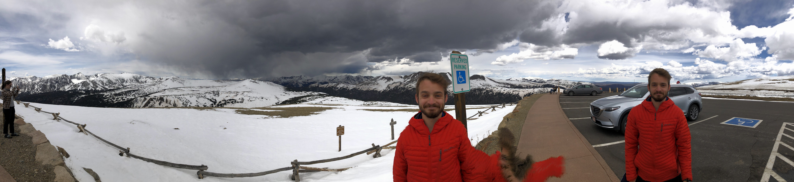

Izak Oltman
My name is Izak Oltman. I am currently a Boas Assistant Professor in the math department at Northwestern University. I am a part of the National Science Foundation Research Training Group Dynamics: Classical, Modern, and Quantum.
I am primarily interested in probabilistic problems arising in semiclassical analysis.
I received my PhD from UC Berkeley in 2024 under the supervision of Maciej Zworski.
Here is my CV.
Publications and preprints
- The spectrum of the Scottish flag operator (in preparation) with Frédéric Klopp.
- Spectrally pathological differential operators subject to small random perturbations (in preparation) with Simon Becker and Martin Vogel.
- Absence of small magic angles for disordered tunneling potentials in twisted bilayer graphene (arXiv: 2302:12799) with Simon Becker and Martin Vogel (submitted).
- Magic angle (in)stability and mobility edges in disordered Chern insulators (arXiv: 2309:02701) with Simon Becker and Martin Vogel (submitted).
- Particle trajectories for quantum maps, Annales Henri Poincaré (2023) published online (arXiv: 2210.03224) with Yonah Borns-Weil.
- A probabilistic Weyl-law for Berezin-Toeplitz operators, Journal of Spectral Theory, 13 (2023), no. 2, pp. 727-754 (arXiv:2207.09599).
- An exotic calculus of Berezin-Toeplitz operators (submitted) (arXiv:2207.09596).
Teaching at Northwestern
- Fall 2024: Math 228-1 (Multivariable Differential Calculus for Engineering)
Teaching at UC Berkeley
- Spring 2021: Math 128a (Numerical Analysis)
- Fall 2020: Math 16a (Calculus and Analytic Geometry)
- Summer 2020: Stat 134 (Concepts of Probability)
- Spring 2020: Math 53 (Multivariable Calculus)
- Fall 2019: Math 54 (Linear Algebra and Differential Equations)
Other math writing
- My thesis.
- Qualifying Exam Study Guide. This is a document I wrote to study for my qualifying exam that is riddled with typos and incomplete sections. It may be a helpful reference to others studying the subjects.